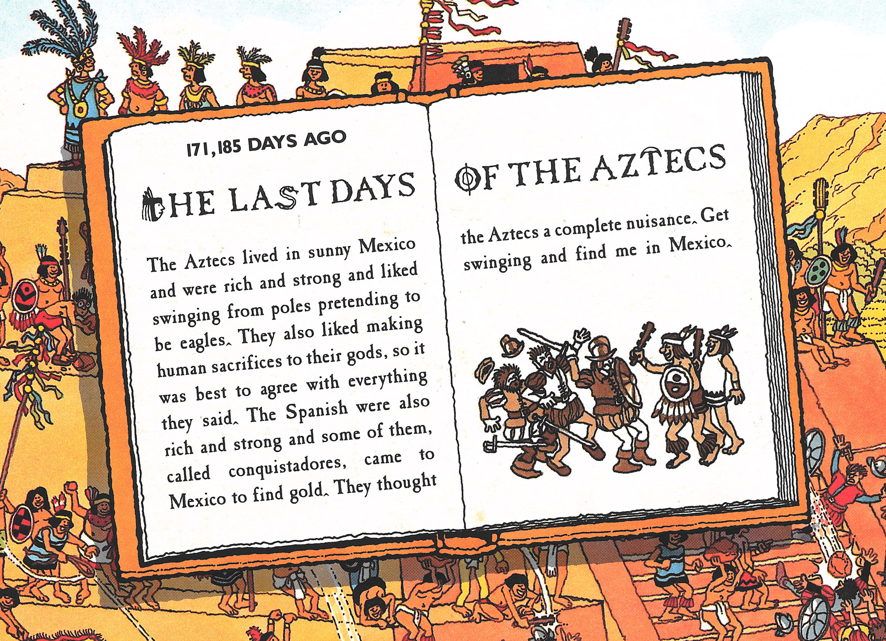

History Book
The book text has been tweaked over the years:1988
The Aztecs lived in sunny Mexico and were rich and strong and liked swinging from poles pretending to be eagles. They also liked making human sacrifices to their gods, so it was best to agree with everything they said. The Spanish were also rich and strong and some of them, called conquistadores, came to Mexico to find gold. They thought the Aztecs a complete nuisance. Get swinging and find me in Mexico.2014
The Aztecs lived in sunny Mexico and were rich and strong and liked swinging from poles, pretending to be eagles. They also liked making human sacrifices to their gods, so it was best to agree with everything they said. The Spanish were also rich and strong, and some of them, called conquistadors, came to Mexico in 1519 to have an adventure. However, when the Aztecs and Spanish met, they did not agree on much.Under the Book
By the early 90s additional artwork had been added underneath the book, so the scene could be used outside the context of the book (posters, puzzles, etc.): Starting the in the 1994 edition, you can see some of the new artwork peeking out of the bottom of the book:
